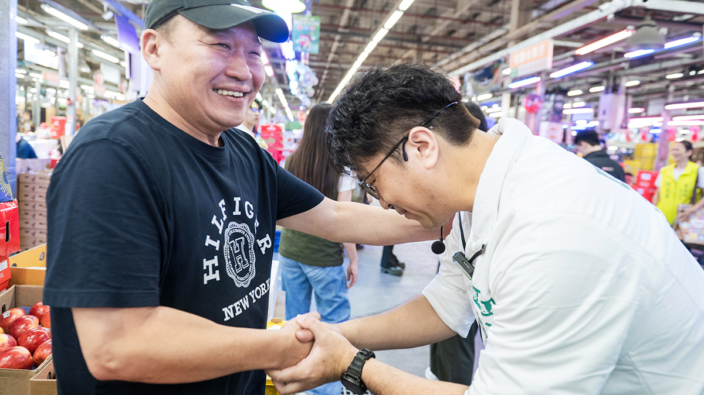
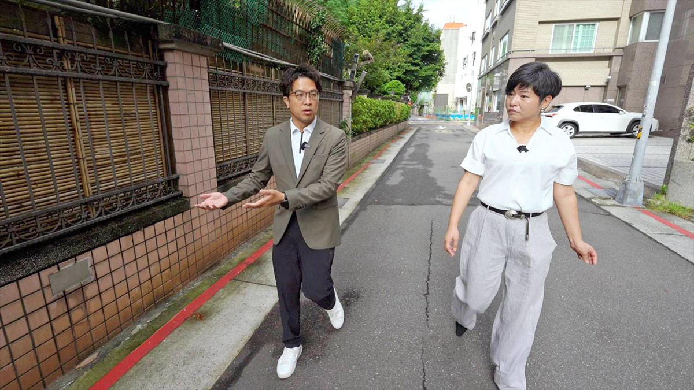
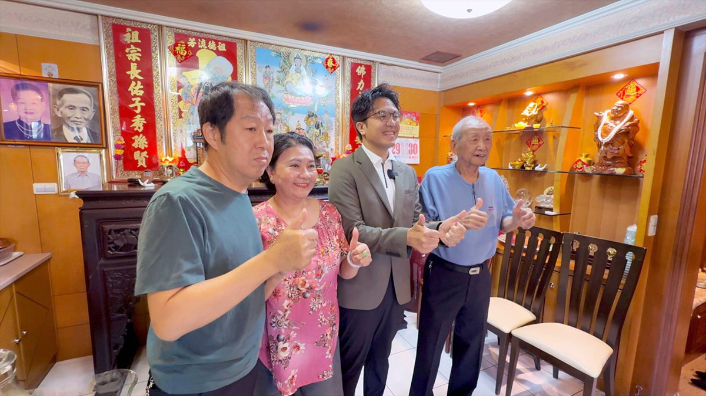
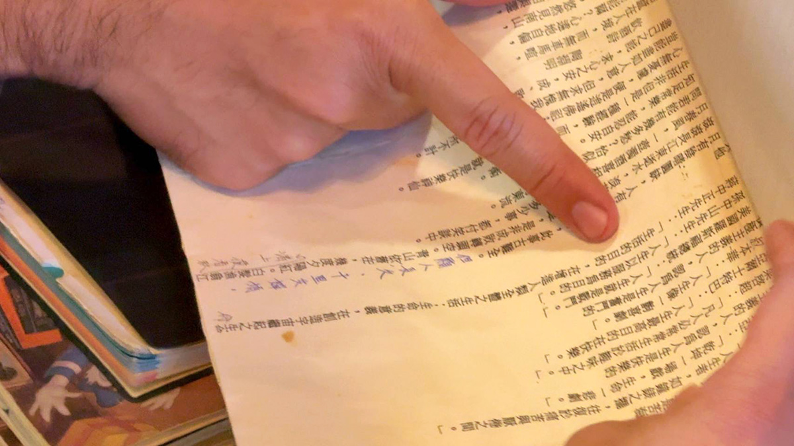
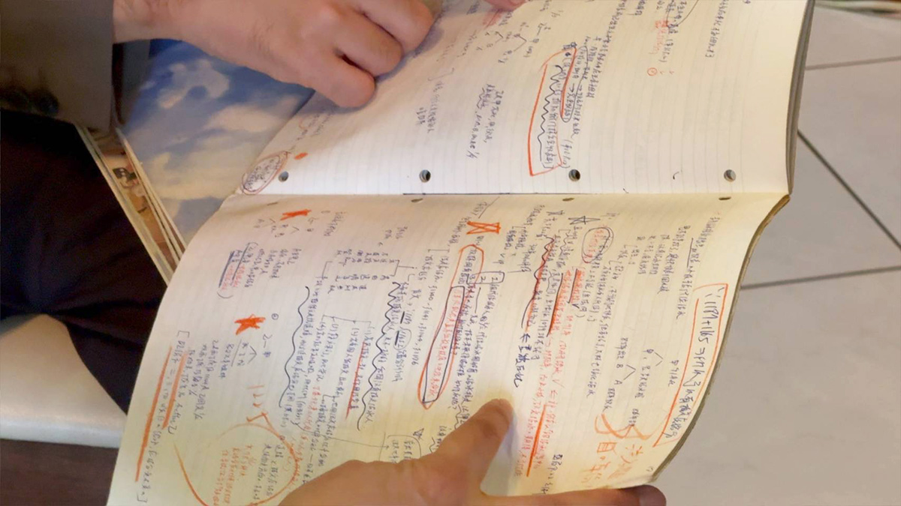

他的城市考題
沈伯洋
看見缺口的人，能從台北的各種「可是」裡找到方向嗎？
◎ 報導／呂佳頴
◎ 攝影／柯勝雄
他的城市考題
◎ 報導／呂佳頴
◎ 攝影／柯勝雄
2026年9月
走永康商圈、回五分埔老家、走訪永吉市場
跟政治人物拍照、握手，他們的第一反應是什麼？「好，謝謝。」大概是基本款。九月這天，跟著沈伯洋看到另一番風景。有人叫他，他先彎腰大約30度，再走到對方身邊一起拍照，那個鞠躬只有一、兩秒，很不像我們平時熟悉的政治人物，卻很沈伯洋。
被鞠躬的人笑了，採訪的人卻忍不住多看一眼，然後納悶：一個正在選台北市長的人，為什麼每次被叫住，第一個動作是先彎腰呢？

▲ 在Threads上有網友暱稱沈伯洋為「君子」，原來民眾一叫他，他總會先微微鞠躬，再上前握手。（圖／沈伯洋競辦提供）
這天是一大清早的大安區，一路上不斷有人叫他、揮手、要求拍照。稍早，他跟我說：「幫人解決壓力很重要。」我問：「那你的壓力是什麼？」他笑說：「壓力來自於選舉，還很多人不認識我。」明明一路被人認出，卻說自己就是落後。沈伯洋的腦袋到底怎麼想？這一天，我們陪他走一段台北街頭。
第一站對他來說很日常，是他以前早上八點送女兒上學時會走的路。走著走著，他往旁邊一指，「你看，這邊有。」他說的是綠色行人標線，再走幾步，「那邊就沒有了。」同樣都是巷子，「安全」卻會間斷、消失。我問他該怎麼辦？「我會去繞。」帶女兒多走一點，比較安全。
如果每一天，爸爸、媽媽都得自己替孩子找一條比較安全的路，那個「繞」，就是城市沒有接好的地方。

▲ 早上7點，我們一起走在沈伯洋以前帶女兒去上學的路，途中發現「通學路」的安全設計會中斷。（圖／柯勝雄攝）
美國紐澤西州的霍博肯市（Hoboken），已經證實透過設計，交通零死亡不會只是口號。但霍博肯人口只有6萬人，台北市卻有250萬人，沈伯洋說那先退一步，不要一次做太大，可以先從學校、市場周邊開始。
寬的地方做實體人行道，窄的地方畫標線，至少讓孩子上學、老人上市場，那一小段路安全一點。一路聽下來，發現他很少只說：「我要這個。」他後面很快就會跟著另一句：「可是⋯⋯」。
再走幾步，看到樹。城市增加綠蔭是很好的想法。但沈伯洋下一句是：「靠馬路的樹，不能一直落葉，不然光掃落葉就瘋了。」「多種樹」是願景，「落葉誰掃？」才是事情真的做下去之後，會碰到的日常。那該怎麼辦？他表示要選對樹種。比較靠內側、公園裡的落葉，可以拿去堆肥。至於增加綠蔭，有時需要建築退縮，可是你叫一樓店家退？「他會跟你翻臉。」所以可先從公家機關、大學開始。
沈伯洋還真跑去北科大（台北科技大學）看。看到人家的樹，整個人興奮起來，「三排欸！種了三排啊！」講完，自己修正：「其實沒有退很多，關鍵是種的方法。」
颱風來了，樹倒了怎麼辦？他說，「保險機制要放進來。」他不是喜歡唱反調這樣單純，比較像他的腦袋，會自己把反對意見叫進來坐。
▲ 沈伯洋提出「都市微森林」政策，希望從「多種樹」走向「養森林」，讓台北處處有樹蔭。左為台北科技大學建築系副教授邵文政。（圖/沈伯洋競辦提供）
走到大安森林公園，他開始談運動驛站。早上七點多，跑步的人一個接一個。如果跑完步，還得先回家洗澡，才能再出門吃飯、看電影、約會，一來一回，至少一個小時。
能不能讓運動直接塞進一個人的上下班日常？跑步、登山、捷運動線附近，有沒有可能設付費盥洗、更衣空間？
講到這裡，他的「可是」又來了。為什麼要拿公共資源服務跑步的人？治安呢？真的有需求，民間為什麼沒有做？他自己一題一題搬出來，講到一半，有人跑過來問：「可以拍照嗎？」「可以，當然可以。」沈伯洋說。拍完，又有人向他揮手，他也揮回去。
再走幾步，「加油喔！」他轉身、點頭、道謝。然後回過頭看我：「我們剛剛講到哪？」停一下，自己又接回去，沒有台子，也沒有簡報，一個想法被打斷再接回來。街上的人，就這樣直接走進訪問裡。
接著要去永吉市場，中間有一點空檔，他說想回五分埔老家看看阿嬤。一上車，我看到他把手伸進口袋，拿出一袋小東西，全是女兒這幾天塞給他的美勞作品。
「這個捲頭髮的是我。」下面還有一顆愛心。「意思就是她愛爸爸。」他拿得很小心，有些已經有點皺了，就怕壓壞。女兒叫他隨身帶著，想她的時候可以拿出來看。他真的帶，回家還要報告：「爸爸今天有帶喔！」
「你一有空就想女兒？」他想都沒想。「是啊，她那麼可愛。」以前女兒曾問過他：「爸爸，你送我這麼多禮物，你猜我最喜歡哪一個？」他猜了老半天都不對，最後女兒自己公布答案：「我最喜歡的禮物是爸爸。」講到這裡，沈伯洋整張臉都軟了，還說：「我想說她到底去哪裡學的？好感人。」前一刻還在講停車、治安、公帑，這一刻就成了女兒奴。
▲ 沈伯洋手上拿著的是女兒小麻糬送他的禮物，要他每天都帶在身上。（圖／柯勝雄攝）
但一談到選舉，表情換了。女兒會在家看爸爸掃夜市的直播，有時候看到有人伸出手，爸爸沒注意到，她會急到跺腳。「沒簽到名的，就會投給另外一個人！」沈伯洋笑著說女兒生氣的原因。他接著說，「我很難跟她（女兒）解釋什麼叫艱困選區。」，他又說：「她大概很怕我選不上。」
「艱困」是沈伯洋先講的，順著這句話，我問：很多人對你的印象，就是國安、中國議題，也有人因為過去的政治事件而不喜歡你。沈伯洋說，自己本來就在國防外交領域，不會因為選市長就避談。
但他清楚知道另一件事：很多人還不認識他。所以他想讓市民站在他面前，「問、質疑、不同意都可以。」然後他說：「給我五到十分鐘，我想辦法說服你。」他想的不是「為什麼你不了解我？」而是「我要怎麼處理這個問題？」
永吉路上的老電梯華廈，阿嬤還住在這裡。一進門，他先走到神明桌前，雙手合十。再一張一張介紹照片，男的阿祖、女的阿祖、阿公。以前一家人會在神明桌前打麻將。接著，他翻出小時候的自己。國小筆記、國中作文、格言剪貼，他會從書、報紙裡找到句子，影印、剪下來，再分類，像是國家社會類、溫馨感人類等。

▲ 沈伯洋老家的神明桌前。他以前在這陪阿公、姑婆和爸爸打麻將。(最右是沈伯洋的三叔公、沈伯洋左邊是阿嬤、後面相片是過世的男阿祖、女阿祖和阿公。（圖／柯勝雄攝）
那本簿子，他取了一個名字：「『我我輯』，代表尋找自己的輯。」翻到其中一頁，我們兩個都停了，上面寫著：「經國先生說⋯⋯」我念出前半句，他幾乎自然地把下一句接完。然後自己笑著說：「那個年代就是那樣。」
這不只是沈伯洋一個人的童年，也是我們這一代人的成長空氣，有些句子在還沒有能力決定信不信以前，就已經先寫進作文簿裡。
找不到高中筆記，大學準備律師考試的還有好幾本。拿出來第一眼，封面全是迪士尼卡通：《獅子王》、《阿拉丁》、《美女與野獸》⋯⋯沈伯洋說，「我很喜歡迪士尼。」結果筆記一翻開，裡面寫的卻是《刑法》，筆記本封面很童話，裡面卻密密麻麻，寫滿星號、箭頭。他沒有把一本教科書抄成另一本，是把很多本書拆掉，再照自己的理解重新排過。

▲ 沈伯洋求學時為了寫作文，剪貼不少格言佳句，他手一指笑說：「我以前背過蔣中正的名言。」（圖／柯勝雄攝）
老是弄錯的地方？就畫星星，旁邊寫「背」。若是自己的批判，則寫「P」代表，「可是考試不用寫。」為什麼？「老師沒有要看我的想法，別跟成績過不去。」很務實的沈伯洋。
很多人看他受訪，覺得這個人背功很好。他搖頭說：「我不太會背。」他覺得真正重要的是先搞懂：正面是什麼？反面呢？誰是既得利益者？改了以後誰受益？誰反對？為什麼反對？缺了什麼？博士班跨領域的訓練，讓他習慣把政治、經濟、社會、心理、工程不同角度放進同一張圖裡。
框架先搭起來，專業不夠，再去找專家。所以幕僚準備資料，不用寫完整講稿。列點就好，剩下的，他自己消化。「我搞懂後，就可以講得很順。」他的筆記就是他的養成邏輯，不是只問『為什麼』，還得加上『缺什麼』？最後，才是把那個「可是」放進去。

▲ 沈伯洋大學時考律師的筆記，上頭有很多星號，意思是「背」。（圖／柯勝雄攝）
眼看快到掃永吉市場的時間。他問幕僚：「還有多少時間？」「15分鐘。」他的眼睛瞬間亮了，「走！帶你去吃我從小吃到大的油飯，那間已經開40年了。」
走過去的路上，他一路指著沿途的店家：這家以前賣水果、那家以前是雜貨店，那個阿伯以前就在這裡。這裡的人跟早上大安區不太一樣，他們看著他長大的。
到了油飯店，他第一件事不是坐下來。先問老闆娘：「他們可以拍我吃油飯嗎？」怕自己現在的身分影響店家做生意。油飯一來，他埋頭就吃。「我一下飛機就要吃這個，都叫我爸先來買。」吃幾口，又冒出一句：「如果每天早上都吃這個，會很開心。」
這一天，我們從一個30度的鞠躬開始。走過他帶女兒上學的路，一路看他指：「這裡有」、「那裡沒有」，再聽他自己說想做的事，然後自己加上很多「可是」。
最後回到五分埔老家，翻開那些很多年前留下來的筆記，更加驗證他看事情，習慣先找『還缺了什麼』？然後把「可是」放進來。這種思考方法可以防止一個人太快相信自己的答案。因為每當一個答案出現，他的腦袋裡，很快就會有人站起來說：等一下，另一邊呢？
但是市長的位置，還有另一道題，城市不能永遠停在「可是」。當A和B真的無法同時滿足，最後還是得決定。沈伯洋很習慣把不同意見叫進來。台北這座城市面臨的是：叫進來之後，怎麼讓他們走出去？
那個總會自己說「可是」的人，如果真的坐上必須拍板的位置，能不能在一大堆「可是」裡，收出一條城市的方向？他的城市考題是把缺少的、反對的、受影響的，全都放進同一張圖之後——最後，怎麼決定？

會維修城市的人，能想像「城市」嗎？

擅長管理複雜系統的人，能讓快速長大的桃園產生共同方向嗎？

熟悉制度的法律人，能找回「消失的4分鐘」嗎？

看懂產業布局的人，能不能看見每一種人的生活？

地方跑得久的人，能不能跑出城市方向？

給答案可以很快，城市治理什麼都能馬上辦嗎？

從競爭中突圍的人，能不能讓不同地方、派系與世代重新走在一起？

直率的真實，能轉換成市民的治理信任嗎？

一路把每一棒跑好的人，能不能跑出自己的路線？

習慣把答案整理清楚的人，能面對沒有標準答案的台北嗎？
新聞部
副總經理 王結玲
議題研究中心／呂佳頴
採訪中心攝影組／柯勝雄
網路新聞中心／楊致中・談雍雍・吳家瑜
數位事業部
內容策展組／廖玉貞・彭嘉儀・林佳瑤・李佳綺
© TVBS Media Inc. All Rights Reserved.｜聯利媒體股份有限公司